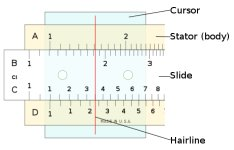

| Parts of the slide rule |
Brief descriptions of the scales |
|

|
| C, D |
Primary scale: numbers positioned according to their logarithms |
| A, B |
Squared scale: Numbers are squares of those on the D and C scales, respectively |
| K |
Cubed scale: Numbers are cubes of those on the D scale |
| L |
Logarithm scale: Base 10 logarithms of the C scale |
| CI |
Inverse scale: Numbers are inverses of those on the C scale |